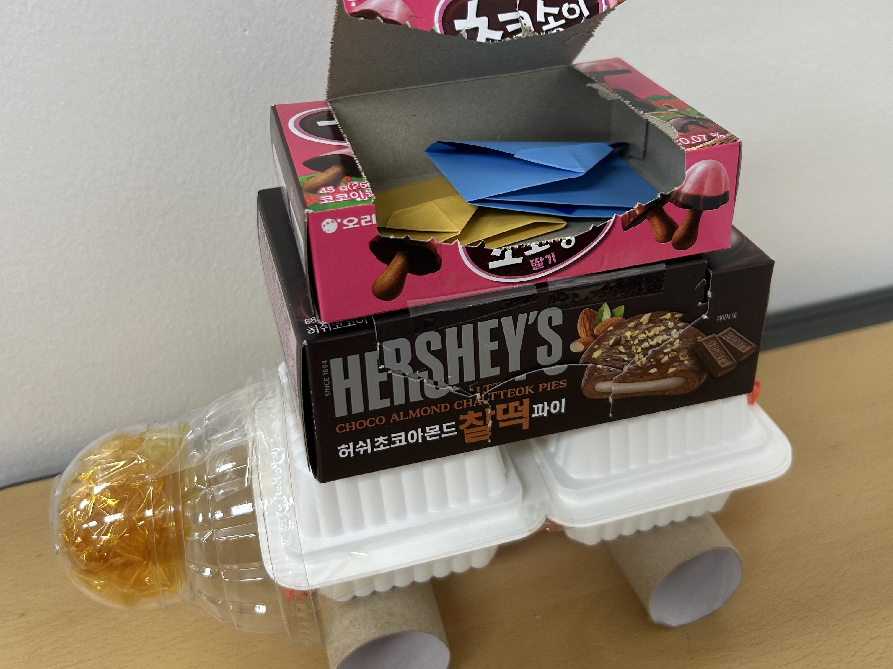
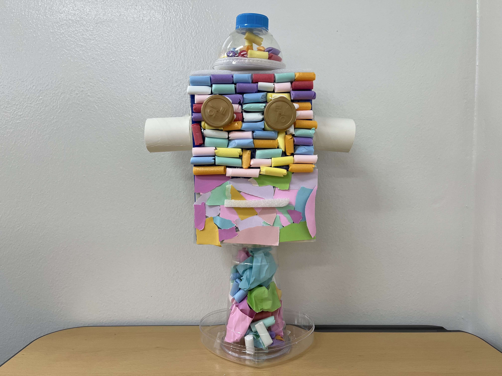
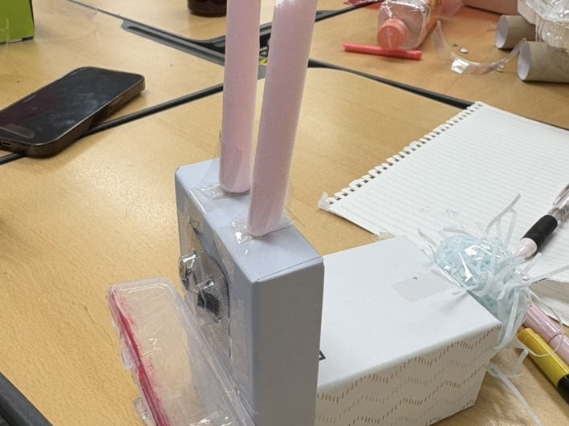
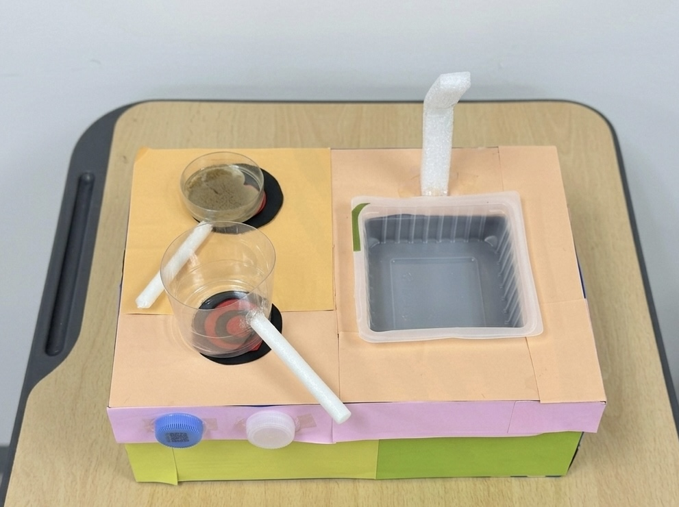
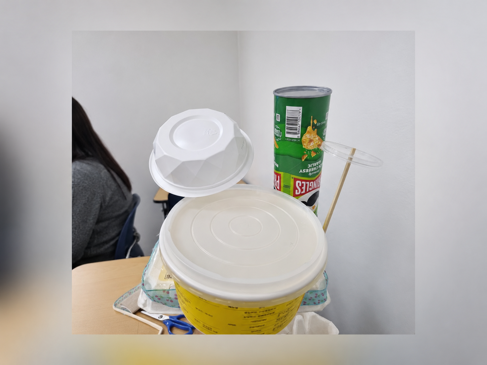

폐품을 활용해서 화물 열차를 만들었어요.
과자 상자, 플라스틱 용기, 휴지심, 빨대, 캡슐을 사용했어요. 처음에는 어렸을 때 동생이 많이 놀았던 전차 놀잇감을 상상하면서 만들었는데, 열리는 작은 과자 상자를 보고 물건을 넣을 수 있는 화물 열차가 떠올랐어요. 실제로 색종이로 편지를 만들어서 넣어봤어요. 또한 뒷 부분에는 빨대를 이용해, 열차를 움직일 수 있게 만들었어요. 앞 부분에는 캡슐과 셀로판지를 활용해서 전조등을 붙였어요. 처음에는 어떻게 만들어야 할지 모르겠었는데 하다 보니까 아이디어가 떠올리고 생각보다 만족스러운 작품이 되었어요.
사호언니제목?
사호, 2026
좋아하는 과자 상자로 만들었어요!
핑크색 물감을 주웠더니 열차가 나타났어요!
이걸 타고 생일 선물 아이디어를 찾으러 가볼까요?

제가 오늘 만든 작품은 어린 시절 제가 책에서 보던 로봇 영웅을 떠올리며 재구성 해본 무지개 로봇입니다.
로봇 장난감을 만들고 싶다는 마음에서 출발하여 페트병과 우유곽, 요구르트 뚜껑, 일회용 컵 뚜껑, 휴지심 등 다양한 재료들을 모았습니다. 모아온 재료들을 활용해 우유곽으로 몸체를 만들고, 휴지심으로 팔을 완성했습니다. 얼굴 부분에는 수수깡과 색종이를 알록달록하게 활용해 꾸몄는데 이는 로봇 내부의 복잡한 회로를 다채로운 색감으로 생동감 있게 표현하고자 한 것입니다. 로봇의 눈은 커다란 병뚜껑으로 만들어서 레이더를 쏘듯 무엇이든 날카롭게 관찰할 수 있는 모습을 표현했습니다. 투명한 컵 안에 색종이를 구겨 넣어 만든 다리는 언제든 로켓처럼 하늘로 솟아오를 수 있는 이 로봇만의 초능력을 표현한 것입니다.
날아라! 알록달록 로봇맨
안정현, 2026
꿈에 그리던 나만의 로봇
로봇이 선물 아이디어 찾기를 도와준대요!
좀 더 가면 힌트가 있다고 하네요?

이 작품은 여러 가지 폐품과 재활용품을 이용해 입이 움직이는 토끼 인형을 만든 활동이에요.
버려지는 물건들을 새롭게 바꾸어 재미있게 표현해 보고자 했어요. 토끼의 입 부분에는 다 쓴 작은 틴케이스를 붙여 입을 열고 닫을 때 딱딱 소리가 나도록 만들었어요. 그래서 눈으로만 보는 작품이 아니라 소리와 움직임도 함께 느낄 수 있도록 표현했어요. 또 알약 포장 안에 작은 종이 조각을 넣어 눈에 붙여 눈동자가 움직이는 것처럼 보이게 했어요. 버려진 물건의 모양과 특징을 살펴보며 어디에 활용할 수 있을지 생각하는 과정이 재미있었고, 평소에는 버려지던 물건도 새로운 아이디어를 통해 멋진 작품 재료가 될 수 있다는 점을 알게 되었어요.
수다쟁이 토끼
신채민, 2026
입을 끊임없이 움직이는 토끼예요
로봇이 안내해준 길을 갔다가 토끼를 만났어요!
따라가볼까요?

저는 어릴 때 실제로 가장 좋아했던 놀이는 요리 놀이였어요.
아빠와 엄마에게 처음 받았던 크리스마스 선물도 주방놀이 세트였어요. 엄마의 주방과 닮은 장난감을 가지고 요리를 하고 친구들에게 나눠주는 상상놀이도 했어요. 나중에 학교에 다니면서도 레고로 집이나 주방을 만들었고, 멋진 식당과 베이커리를 열어서 요리를 하는 상상을 했었어요. 이제는 집에서 실제로 요리를 하고 있지만, 재활용품을 이용해 장난감을 창작하려고 하니까 가장 좋아했던 놀이를 떠올리게 되었고 만들게 되었어요. 신발 상자로 틀을 만들고 색종이로 꾸미며줬어요. 냄비와 같은 조리 도구들을 만들었어요. 머리 속으로 상상했던 장난감이 생각보다 더 잘 만들어져서 신기하고 재밌었어요!
나만의 주방
신하선, 2026
보글보글 감자튀김을 만들어요
토끼를 따라갔더니 주방을 발견!
여기서 무언가 만들어볼까요?

저는 음악을 연주하는 밴드 활동을 오래 해서 악기에 관심이 많아요. 여러 가지 폐품들을 살펴보다가 문득 '이걸로 드럼을 만들어보면 어떨까?' 하는 생각이 들었어요. 빈 상자와 플라스틱 통들을 하나씩 두드려보니, 물건마다 각자 다르게 재미있는 소리가 나는 게 흥미로웠어요. 그래서 이 물건들을 모아 멋진 드럼 세트를 만들기로 했죠. 드럼은 손에 든 스틱으로 쳐서 소리를 내기도 하지만, 발로 꾹 밟아서 움직이는 '페달'로 소리를 내기도 해요. 저는 발로 밟으면 진짜로 움직이는 페달을 만들고 싶어서 아주 오랫동안 고민했어요. 하지만 생각보다 기계를 만드는 것이 너무 어려워서, 결국 페달이 제대로 움직이게 완성하지는 못했답니다. 페달을 만드는 데 시간을 다 쓰는 바람에 드럼을 알록달록 예쁘게 꾸밀 시간도 부족해져서, 저에게는 조금 아쉬움이 남는 작품이에요. 비록 화려하고 예쁘게 꾸며진 드럼은 아니지만, 크기와 모양이 다른 통들을 두드리면 각각 어떤 소리가 날지 한번 상상해 보세요!
잃어버린 소리를 찾아서
김지호, 2026
저는 사실 드럼을 칠 줄 모른답니다
신나는 소리가 들리네요!
이제 곧 파티가 시작될 것 같아요!